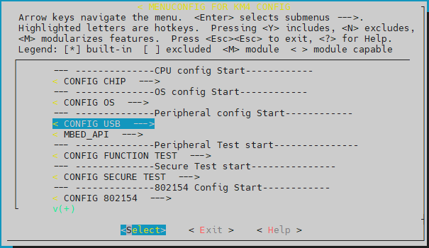
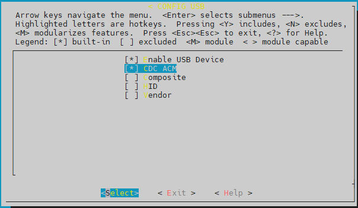

Introduction
USB OTG is the abbreviation for Universal Serial Bus On-The-Go.
Features
The features of Realtek USB stack are listed below:
USB 2.0 full-speed device mode
Unified HAL API for all Realtek Ameba SoC series
Device-only API for class and application development
Device classes: CDC ACM, Composite and HID
Device descriptor full customizable
NOT supported: OTG/host mode, high/low-speed device mode
Architecture
The software architecture of USB stack is illustrated below:
{kind=link}
USB stack architecture
The function of each layer:
USB HAL driver: implements the SoC-specific USB functions and provides unified USB HAL API for USB device core drivers
USB device core driver: implements the USB device-specific functions and provides unified USB device API for USB device classes
USB class: implements the USB classes as per USB IF specifications
USB application: implements the USB applications corresponding with the USB classes
Implementation
The USB stack is implemented in the following files:
Class |
Transfer |
Class directory |
Application directory |
|---|---|---|---|
CDC ACM |
CTRL, BULK IN/OUT, INTR IN |
component\usb\device\cdc_acm |
component\example\usb\usbd_cdc_acm |
Composite |
CTRL, BULK IN/OUT, INTR IN/OUT |
component\usb\device\composite |
component\example\usb\usbd_composite |
HID |
CTRL, INTR IN/OUT |
component\usb\devicehid |
component\example\usb\usbd_hid |
Configuration
Type
make menuconfigcommand under{SDK}\amebadplus_gcc_project, then selectMENUCONFIG FOR KM4 CONFIG>CONFIG USB:
{kind=link}
Select
Enable USB Device, then choose the desired USB class: Type
make all EXAMPLE=<example>command under GCC auto build project to build image with USB application.Note
The
<example>is the folder name undercomponent/example/usb, and shall correspond to the mode and class configuration in Step 2.
{kind=link}
USB HAL APIs
Overview
The USB HAL APIs provide unified interfaces for upper layer USB device core drivers to access SoC-specific USB hardware.
{kind=link}
APIs for Core Driver
Header file: {SDK}\component\soc\amebadplus\fwlib\include\ameba_usb.h
API |
Description |
|---|---|
|
SoC-specific USB initialization |
|
SoC-specific USB de-initialization |
USB Device APIs
Overview
{kind=link}
Core APIs
Header file: {SDK}\component\usb\device\core\usbd.h
APIs for Class
API |
Description |
|---|---|
usbd_register_class |
Register a class, the class is defined by type usbd_class_driver_t, refer to Section Class Callback for details. |
usbd_unregister_class |
Unregister a class |
usbd_ep_init |
Initialize an endpoint |
usbd_ep_deinit |
De-initialize an endpoint |
usbd_ep_transmit |
Transmit data to an endpoint |
usbd_ep_receive |
Prepare to receive data from an endpoint |
usbd_ep_set_stall |
Set an endpoint to STALL state |
usbd_ep_clear_stall |
Clear the STALL state of an endpoint |
usbd_ep_is_stall |
Check whether the endpoint is in STALL state |
usbd_ep0_set_stall |
Set endpoint 0 to STALL state |
usbd_ep0_transmit |
Transmit data to endpoint 0, i.e. control endpoint |
usbd_ep0_receive |
Prepare to receive data from endpoint 0, i.e. control endpoint |
usbd_ep0_transmit_status |
Transmit status to endpoint 0, i.e. control endpoint |
usbd_ep0_receive_status |
Prepare to receive status from endpoint 0, i.e. control endpoint |
usbd_get_str_desc |
Used for class to transfer ASCII string to USB string descriptor format in UNICODE 16 |
Class Callback
The USB device class is defined by type usbd_class_driver_t as a group of callbacks:
typedef struct _usbd_class_driver_t {
u8 *(*get_descriptor)( usb_dev_t *dev, usb_setup_req_t *req,
usb_speed_type_t speed, u16 *len);
u8(*set_config)(usb_dev_t *dev, u8 config);
u8(*clear_config)(usb_dev_t *dev, u8 config);
u8(*setup)(usb_dev_t *dev, usb_setup_req_t *req);
u8(*sof)(usb_dev_t *dev);
u8(*suspend)(usb_dev_t *dev);
u8(*resume)(usb_dev_t *dev);
u8(*ep0_data_in)(usb_dev_t *dev, u8 status);
u8(*ep0_data_out)(usb_dev_t *dev);
u8(*ep_data_in)(usb_dev_t *dev, u8 ep_addr, u8 status);
u8(*ep_data_out)(usb_dev_t *dev, u8 ep_addr, u16 len);
void (*status_changed)(usb_dev_t *dev, u8 status);
} usbd_class_driver_t;
Description of the callbacks:
API |
Description |
|---|---|
get_descriptor |
Get device descriptor |
set_config |
Called when device core sets configuration, e.g. SET_CONFIGURATION request received at addressed state |
clear_config |
Called when device core clears configuration, e.g. SET_CONFIGURATION request with a new configuration received at configured state |
setup |
Called at setup phase of a control transfer, used for class-specific request handling |
ep_data_in |
Called at data in phase of a transfer, used to inform the class that the data transmit is done |
ep_data_out |
Called at data out phase of a transfer, used to inform the class to handle the received data |
ep0_data_in |
Called at data in phase of a control transfer, used to inform the class that the control data transmit is done |
ep0_data_out |
Called at data out phase of a control transfer, used to inform the class to handle the received control data |
sof |
Called at SOF interrupt, used for class-specific SOF handling |
suspend |
Called at suspend interrupt, used for class-specific suspend handling |
resume |
Called at resume interrupt, used for class-specific resume handling |
status_changed |
Called at USB attach status changed |
APIs for Application
usbd_config_t
typedef struct {
u8 speed; /* USB speed:
USB_SPEED_HIGH: high speed
USB_SPEED_HIGH_IN_FULL: full speed */
u8 dma_enable; /* Enable USB internal DMA mode,
0-Disable, 1-Enable */
u8 isr_priority; /* USB ISR thread priority */
u8 intr_use_ptx_fifo; /* Use Periodic TxFIFO for INTR IN
transfer */
u32 rx_fifo_depth; /* RX FIFO depth */
u32 nptx_fifo_depth; /* Non-Periodical TX FIFO depth */
u32 ptx_fifo_depth; /* Periodical TX FIFO depth */
u32 ext_intr_en; /* Enable extra USB interrupts:
BIT0: USBD_SOF_INTR, GINTSTS.bit3
BIT1: USBD_EOPF_INTR, GINTSTS.bit15
BIT2: USBD_EPMIS_INTR, GINTSTS.bit17
BIT3: USBD_ICII_INTR, GINTSTS.bit20
*/
u8 nptx_max_epmis_cnt; /* Max Non-Periodical TX transfer EPMIS
interrupt count allowed, EPMIS
interrupt will be handled only if the
EPMIS interrupt count is higher than
this value and USBD_EPMIS_INTR is
enabled in ext_intr_en */
u8 nptx_max_err_cnt[USB_MAX_ENDPOINTS]; /* Max Non-Periodical
TX transfer error count allowed for
each endpoint, if endpoint transfer
error count is higher than this value,
the transfer status will be
determined as failed */
} usbd_config_t;
API |
Description |
|---|---|
usbd_init |
Initialize USB device stack with configuration defined by type For DFIFO configuration, only two options are suggested:
|
usbd_deinit |
De-initialize USB device stack |
usbd_get_status |
Get attach status, the return value is defined by type typedef enum {
USBD_ATTACH_STATUS_INIT = 0U, // Initialized
USBD_ATTACH_STATUS_ATTACHED = 1U, // Attached to host
USBD_ATTACH_STATUS_DETACHED = 2U // Detached from host
} usbd_attach_status_t;
|
usbd_get_bus_status |
Get USB bus status, the status argument returns the bit combined value of type typedef enum {
USBD_BUS_STATUS_DN = BIT0, // D-
USBD_BUS_STATUS_DP = BIT1, // D+
USBD_BUS_STATUS_SUSPEND = BIT2, // suspend indication
} usbd_bus_state_t;
|
usbd_wake_host |
Send a remote wakeup signal to USB host |
Application Callback
N/A
Class APIs
CDC ACM
Header file: {SDK}\component\usb\device\cdc_acm\usbd_cdc_acm.h
API for Application
API |
Description |
|---|---|
usbd_cdc_acm_init |
Initialize the class with parameters:
|
usbd_cdc_acm_deinit |
De-initialize the class |
usbd_cdc_acm_transmit |
Transmit BULK IN data to host, the data length shall not be larger than the TX buffer length |
usbd_cdc_acm_notify_serial_state |
Send INTR IN data to notify device serial state to host |
Application Callback
CDC ACM class provides callbacks for user application, the callbacks are defined by type usbd_cdc_acm_cb_t:
typedef struct {
u8(* init)(void);
u8(* deinit)(void);
u8(* setup)(usb_setup_req_t *req, u8 *buf);
u8(* received)(u8 *buf, u32 len);
void(* transmitted)(u8 status);
void (*status_changed)(u8 status);
} usbd_cdc_acm_cb_t;
Description of the callbacks:
API |
Description |
|---|---|
init |
Called at the end of class initialization flow, for application-specific initialization |
deinit |
Called at the beginning of class de-initialization flow, for application-specific de-initialization |
setup |
Called at setup phase or data out phase of class-specific control requests, for application-specific setup |
received |
Called when BULK OUT transfer completed, for application to handle the received data |
transmitted |
Called when BULK IN transfer completed, indicates application the transfer status |
status_changed |
Called when USB attach status changed, for application to support hot plug |
Example
An example is provided for users to use CDC ACM device class. The example turns AmebaDPlus into a virtual serial port for PC, common serial port tools such as Tera Term can be used to communicate with AmebaDPlus, and AmebaDPlus will echo back the message sent to it.
Refer to the readme.txt file of the example for details.
Composite
Header files:
<SDK>\component\usb\device\composite\usbd_composite.h<SDK>\component\usb\device\composite\usbd_composite_cdc_acm.h<SDK>\component\usb\device\composite\usbd_composite_hid.h
API for Application
General API:
API |
Description |
|---|---|
usbd_composite_init |
Initialize the class with parameters:
|
usbd_composite_deinit |
De-initialize the class |
CDC ACM interface API:
API |
Description |
|---|---|
usbd_composite_cdc_acm_transmit |
Transmit BULK IN data to host, the data length shall not be larger than the TX buffer length |
usbd_composite_cdc_acm_notify_serial_state |
Send INTR IN data to notify device serial state to host |
HID interface API:
API |
Description |
|---|---|
usbd_composite_hid_send_data |
Transmit INTR IN data to host, the data length shall not be larger than the TX buffer length |
Application Callback
Composite class provides callbacks for user application, the callbacks are defined by two types:
usbd_cdc_acm_cb_t
typedef struct {
u8(* init)(void);
u8(* deinit)(void);
u8(* setup)(usb_setup_req_t *req, u8 *buf);
u8(* received)(u8 *buf, u32 len);
} usbd_cdc_acm_cb_t;
Description of the callbacks:
API |
Description |
|---|---|
init |
Called at the end of class initialization flow, for application-specific initialization |
deinit |
Called at the beginning of class de-initialization flow, for application-specific de-initialization |
setup |
Called at setup phase or data out phase of class-specific control requests, for application-specific setup |
received |
Called at data out phase of BULK OUT transfer, for application to handle the received data |
usbd_hid_usr_cb_t
typedef struct {
u8(* init)(void);
void(* deinit)(void);
u8(* setup)(usb_setup_req_t *req, u8 *buf);
void(* transmitted)(u8 status);
} usbd_hid_usr_cb_t;
Description of the callbacks:
API |
Description |
|---|---|
init |
Called at the end of class initialization flow, for application-specific initialization |
deinit |
Called at the beginning of class de-initialization flow, for application-specific de-initialization |
setup |
Called at setup phase or data out phase of class-specific control requests, for application-specific setup |
transmitted |
Called at data in phase of INTR IN transfer to inform the application that the INTR IN transfer is done |
usbd_composite_cb_t
typedef struct {
void (*status_changed)(u8 status);
} usbd_composite_cb_t;
Description of the callbacks:
API |
Description |
|---|---|
status_changed |
Called when USB attach status changed, for application to support hot plug |
Example
An example is provided for user to use Composite device class. The example turns AmebaDPlus into a CDC ACM and HID composite device. Refer to the readme.txt file of the example for details.
HID
Header file: {SDK}\component\usb\device\hid\usbd_hid.h
APIs for Application
API |
Description |
|---|---|
usbd_hid_init |
Initialize the class with parameters:
|
usbd_hid_deinit |
De-initialize the class |
usbd_hid_send_data |
Transmit INTR IN data to host, the data length shall not be larger than the TX buffer length |
Application Callback
HID class provides callbacks for user application, the callbacks are defined by type usbd_hid_usr_cb_t:
typedef struct {
void(* init)(void);
void(* deinit)(void);
void(* setup)(void);
void(*transmitted)(u8 status);
#if HID_DEVICE_TYPE == HID_KEYBOARD_DEVICE
void(* received)(u8 *buf, u32 len);
#endif
void (*status_changed)(u8 status);
} usbd_hid_usr_cb_t;
Description of the callbacks:
API |
Description |
|---|---|
init |
Called at the end of class initialization flow, for application-specific initialization |
deinit |
Called at the beginning of class de-initialization flow, for application-specific de-initialization |
setup |
Called at setup phase or data out phase of class-specific control requests, for application-specific setup |
transmitted |
Called at data in phase of INTR IN transfer to inform the application that the INTR IN transfer is done |
received |
Called at data out phase of INTR OUT transfer to inform the application that the INTR OUT data is received |
status_changed |
Called when USB attach status changed, for application to support hot plug |
Example
An example is provided for user to use HID device class. The example turns AmebaDPlus into a mouse for PC, simulates the mouse move, scroll, button pressed events.
Refer to the readme.txt file of the example for details.
Design Suggestions
For constant powered USB devices (e.g. battery powered devices), hot plug events shall be properly processed to avoid malfunction or memory leak.
USB device stack provides the following API to get USB device status for the detection of hot plug events:
u8 usbd_get_status(void)
And USB device examples (e.g. CDC ACM) provide examples of how to use this API to support hot plug, please refer to the corresponding configuration (e.g. CONFIG_USDB_CDC_ACM_CHECK_USB_STATUS for CDC ACM example) for details.
However, it is not recommended to support hot plug by SW in this way for final products. Instead, it is suggested to check the USB status via hardware VBUS GPIO interrupt along with the usbd_get_status API, and the strategy is described as following table.
Event |
usbd_get_status |
GPIO interrupt |
VBUS status |
Detected USB status |
|---|---|---|---|---|
Reset (detached) |
USB_STATUS_INIT |
OFF |
Initial detached status |
|
Attach to PC |
USB_STATUS_ATTACHED |
Y (rising edge) |
ON |
Attached to PC |
Detach from PC |
USB_STATUS_DETACHED |
Y (falling edge) |
OFF |
Detached |
Attach to charger |
USB_STATUS_INIT or USB_STATUS_DETACHED |
Y (rising edge) |
ON |
Attached to charger |
Detach from charger |
USB_STATUS_DETACHED |
Y (falling edge) |
OFF |
Detached |
By comparing the new detected USB status with the old determined USB status, the exact USB status can be determined. The detailed USB status detect flow is shown as following figure, only for reference.